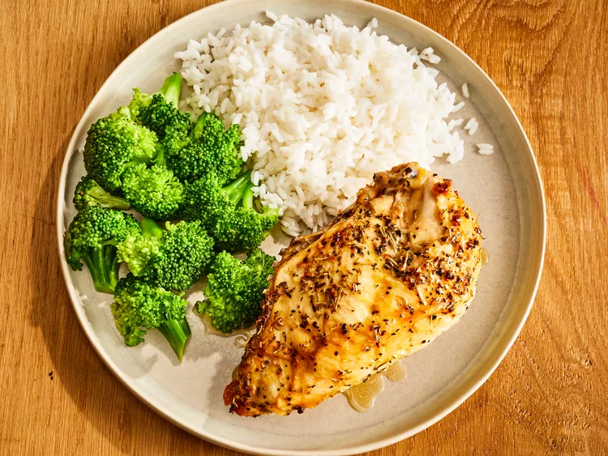

Baked Split Chicken Breast

Description
We all have had dry chicken before, but that will no longer be an issue after you try this simple baked chicken recipe. This herb-infused chicken dish can go with anything you choose to make it with. It's also a great dish for those looking for any easy recipe for meal-prep.
Ingredients
- 2 large bone-in chicken breast halves with skin
- ¼ cup extra-virgin olive oil
- ½ teaspoon garlic, minced
- ½ teaspoon coarse sea salt
- ½ teaspoon cracked black pepper
- ¼ teaspoon dried rosemary
- ¼ teaspoon dried basil
Steps
- Gather all ingredients.
- Rub chicken breasts with olive oil and garlic; sprinkle with salt, black pepper, rosemary, and basil. Arrange chicken in a large baking dish.
- Refrigerate for at least 45 minutes. Meanwhile, preheat the oven to 375 degrees F (190 degrees C).
- Bake in the preheated oven until chicken meat is no longer pink at the bone and the juices run clear, 45 to 60 minutes. An instant-read thermometer inserted in the thickest part of the breast meat should read 165 degrees F (75 degrees C).
- Serve hot and enjoy!